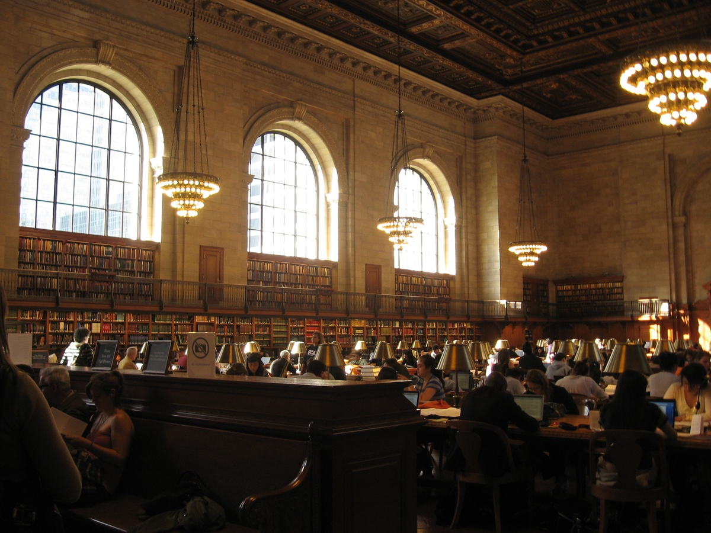
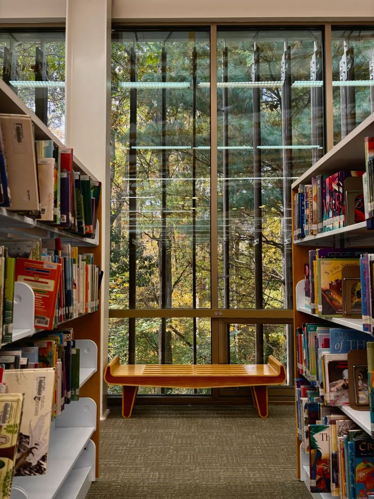

When most people imagine a library, they see a quiet room lined head-to-toe with bookshelves, filled with outgoing librarians and quiet readers. While that image still holds truth, it no longer tells the whole story. Today, a library is far more than a place to store books. Modern libraries provide everyday necessities, from cooking utensils and gardening supplies to power tools. They also offer the most sought-after resource in this day and age: free Wi-Fi. Paired with career-building services like resume workshops and job-search assistance, libraries have evolved into vibrant community hubs.
Today’s libraries are constantly adapting to meet shifting public needs. With reliable internet access and computing devices, they have become the primary digital access point for whole neighborhoods. Job seekers rely on them not just for Wi-Fi, but for specialized software, printing services, hardware, digital literacy training, and a space to work quietly.

Beyond career support, libraries also serve as social safety nets. They act as safe day shelters for unhoused community members, especially during extreme weather. They also offer programs that bring people within the community together. From Early Childhood Storytime to Teen Nights and even Senior Bingo, libraries cater to many different groups of people. In an increasingly commercialized world, the library remains one of the last true “third spaces” where anyone can simply exist without the expectation of spending money.
For low- and middle-income families operating on tight budgets, non-essential comforts are rarely in the cards. Practical items like lawnmowers, power tools, or specialized household goods can cost hundreds of dollars, turning basic conveniences into luxuries out of their reach. Libraries bridge this gap. By offering free access to specialized household items, recreational gear (like board games and beach equipment), and digital services, libraries empower families to increase their quality of life despite financial constraints.
Yet, despite expanding their roles, public libraries still chronically face funding vulnerabilities. Libraries rely heavily on funds from the local government, mainly local property taxes coupled with minor state aid and private donations. Due to the nature of their funds, libraries are directly exposed to economic downturns and local political budgets, making their funding an uncontrollable variable. When budgets tighten, libraries are often among the first line items to receive cuts.

When funding is reduced, the consequences affect the entire community. Operating hours are reduced to save on utilities, staff members are laid off, and vital community programs are canceled. Budget cuts directly threaten adult literacy classes, youth enrichment, and after-school programs. Defunding libraries also affects the physical space, limiting access to clean facilities, technology, and shelter for those who need it most.
Funding public libraries is not a luxury or a secondary expense; it is a direct investment in social equity. Libraries provide every resident, regardless of socioeconomic status, with the resources needed to learn, grow, and build a better life. It is time our public budgets finally reflect that truth.